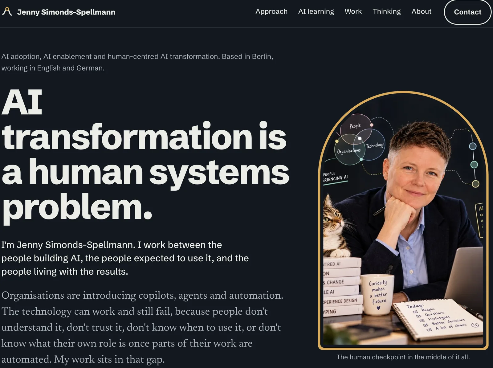

Prototyping &
Vibe Coding
Hands-on, AI-assisted prototyping: working demos and tools built fast enough to test ideas with real people. Not full-stack engineering, but prototyping that makes concepts real without waiting for a developer.
-
Interactive guidance · Responsible AI
Making AI compliance usable
Turning a dry, hard-to-use AI compliance policy into interactive, scenario-based guidance people can apply in their day-to-day work.
- The question
- Can people work out what to check, who decides and what to do when they're unsure, without reading the whole policy?
- What I built
- Scenario-based guidance: people pick a real situation, such as summarising a document with AI, and see what to check, who decides, and what to do if they're unsure.
- Built with
- Articulate Rise 360 · Scenario-based learning · UX research · Responsible AI
- Status
- Anonymised recreation of a real organisational AI learning project
-
AI agent · Automation · Live tool
EquitAI: how it was built
An AI agent and automation prototype for CVs and job applications, starting from the recruitment barriers migrant and refugee women face.
- The question
- What should AI automate in a job application, what should it only augment, and where must the applicant stay in control?
- What I built
- A live tool that helps people tailor CVs and cover letters and track applications, keeping their own voice at the centre.
- Built with
- Cursor · Next.js · Vercel · Supabase · GenAI
- Status
- Live experiment, started in the GRAILS 2025 programme at Elisava
-
AI-assisted development · Accessibility
aiadoption.design
My AI adoption portfolio, designed and built with Cursor: a multi-page site with interactive method tabs, an editorial section and case study templates.
- The question
- How far can a designer take a production-quality, accessible site with AI-assisted development?
- What I built
- Keyboard-accessible tabs and navigation, light and dark modes, reduced-motion support, and content-driven pages for case studies and articles.
- Built with
- Cursor
- Status
- Live

aiadoption.design in dark mode. -
From question to something we can test
Not every AI idea needs a business case, roadmap and six-month build before we can learn whether it works.
Sometimes the useful next step is much smaller: make enough of the idea real that people can interact with it, question it and show us what we got wrong.
- Question
- Prototype
- Human
- Evidence
- Next decision
I use rapid AI-assisted prototyping to shorten the distance between a messy question and something we can actually learn from.